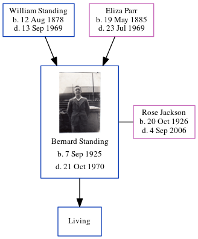

Victor William Standing 1915 - 2008
[ Home ] | [ Calendar ] | [ Surnames Index ] | [ Errors ] | [ Family History ]A motor driver and the child of William Standing (a laundry man) and Eliza Parr, Victor Standing, the fourth cousin once-removed on the father's side of Nigel Horne, was born in Romford, Essex, England on 10 May 19151,2,3,4,5 and. He married Ellen E M Crothers (with whom he had 5 surviving children Ellen F, Teresa M, David W, Christopher Earling and Ursula E) in Ilford, London, England on 3 Sept 19406.
During his life, he was living at 5 Aurelia Cottages, Ley Street in Ilford on 29 Sept 19391 - less than a mile from his brother Ernest Douglas who was living at 5 Aurelia Cottages, Ley Street in Ilford; and at 57 Kimberley Avenue in Ilford in 1963.
He died on 26 Jun 2008 in Cowes, Isle of Wight, England4,5.
Parents
- William Ernest was born on 12 Aug 1878
- Eliza Mary was born on 19 May 1885
Citations
- 1939 Register - Findmypast (was the son of the head of the household)
- England & Wales births 1837-2006 - Findmypast
- England & Wales, FreeBMD Birth Index, 1837-1915 Online publication - Provo, UT, USA: The Generations Network, Inc., 2006.Original data - General Register Office. England and Wales Civil Registration Indexes. London, England: General Register Office. © Crown copyright. Published by permission of the Cont
- England and Wales, Death Index, 2007-2013 Ancestry.com Operations, Inc.
- United Kingdom Deaths - Findmypast
- England & Wales, Marriage Index: 1916-2005 Online publication - Provo, UT, USA: The Generations Network, Inc., 2009.Original data - General Register Office. England and Wales Civil Registration Indexes. London, England: General Register Office. © Crown copyright. Published by permission of the Cont
Media
Victor William Standing
England & Wales marriages 1837-2008 Transcription - BMD-M-1940-3-PZ-000345-075
England & Wales births 1837-2006 Transcription - BMD-B-1915-2-AZ-001419-056
1939 Register Transcription - TNA-R39-1088-1088B-002-28
United Kingdom Deaths 2007-2017 - BMD/D/MILLEN/001906164
Family Tree
Map
Generated by ged2site. Last updated on Jul 3, 2024
Known Issues
Parent William is listed in the residence for 1925, but this child is not
Residence record for 1963 contains no citation
Listed in the residence for 1963, but spouse Ellen E M Crothers is not